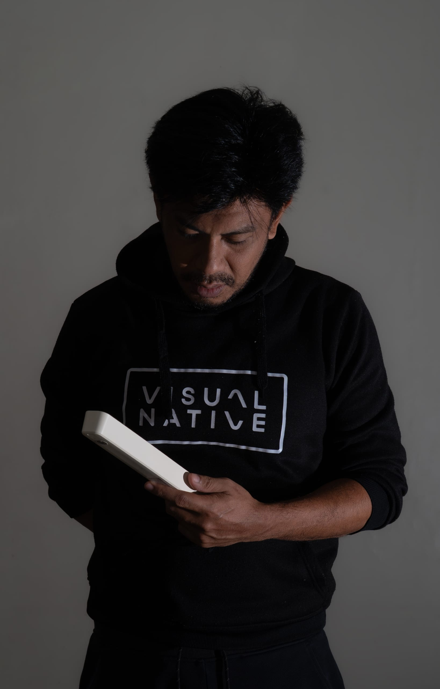
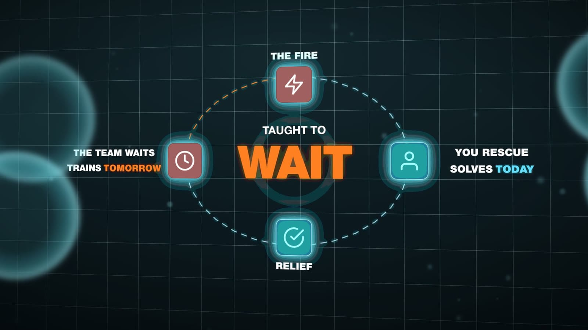

CELSO NARCA
Video EditorMotion GraphicsDesignAI Workflows
I edit long-form and short-form video for YouTube and social media — the cut, captions, sound and motion graphics — and build AI tools that take the repetitive work out of an edit.
Available for full-time remote work · UTC+8

Highlights reel
Forty seconds of recent work for The Autonomous Leader: episode edits, motion graphics and vertical reels. Music: “Tech Live” by Kevin MacLeod (incompetech.com), licensed under CC BY 4.0.
Selected work

Video Editing
The Autonomous Leader
Daily long-form episodes and their companion shorts for a business-education brand: the cut, captions, graphics and sound.

Motion Graphics
AI-Built Motion Graphics
Explainer motion graphics for The Autonomous Leader, written as code with an AI assistant and mastered at 4K.

Video Editing
The Last Hiker — Bong Bato
A 32-second cinematic I shot and edited myself, from a sunrise hike on Bong Bato, Sinapulan.

AI & Automation
Shortsmith
A text-to-video web app I built: type an idea, get a finished vertical short.
- daily episodes edited, each with companion shorts
- 60+
- motion-graphics shots delivered at 4K
- 140+
- apps I designed and built, from uploads to text-to-video
- 3
- editing video professionally since
- 2021
What I do
- 01
Video Editing
Long-form episodes, shorts and short cinematic pieces. Multi-camera switching, retake removal, pacing, B-roll, captions and sound, cut in Premiere Pro and delivered for YouTube and social media.
- 02
Motion Graphics
Explainer graphics, callouts and overlays in After Effects and Remotion, timed to the voiceover and delivered as 4K masters or transparent ProRes overlays that drop straight onto the timeline.
- 03
Graphic Design
Logos, jersey designs, thumbnails and social graphics in Photoshop and Illustrator, built to read at the size people will actually see them.
- 04
Photo Editing
Retouching, compositing and colour in Photoshop and Lightroom — from custom portrait composites to recovering a sky the camera lost.
- 05
Photography
My own photography around Davao del Sur: insects and birds at close range, landscapes and the night sky.
- 06
AI & Automation
Small tools that take the repetitive half of an edit away: Premiere Pro panels, transcription-driven captions, upload scheduling and a text-to-video pipeline.

Video Editing
The Autonomous Leader
Daily long-form episodes and their companion shorts for a business-education brand: the cut, captions, graphics and sound.
- Long-form and short-form editing
- Multi-camera switching and retake removal
- Pacing and B-roll
- Keyword-highlighted captions
Hiring a video editor? Let's talk.
I'm looking for a full-time remote role editing video: long-form, shorts or motion graphics. Send me the role, the kind of content and the tools your team uses, and I'll reply myself, usually within a day, on Philippine time (UTC+8).
iamesong15@gmail.com